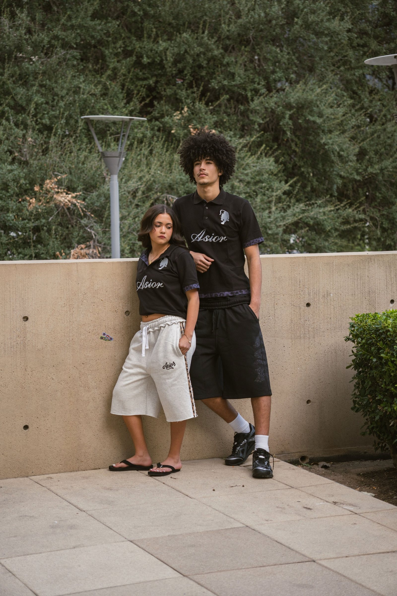
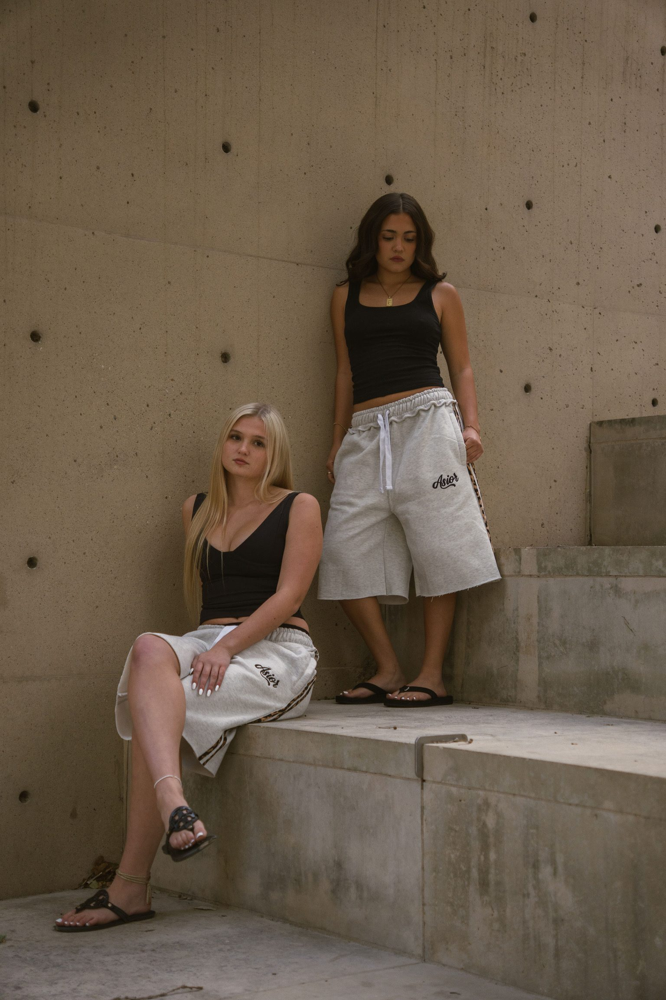
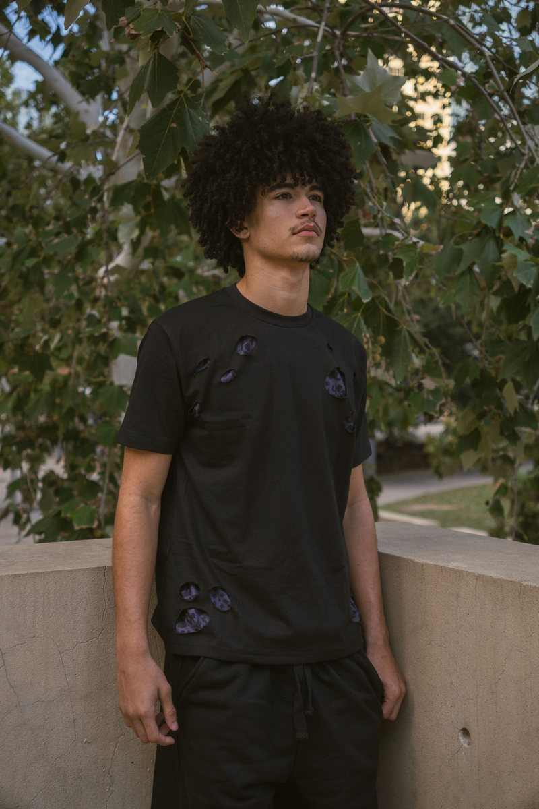
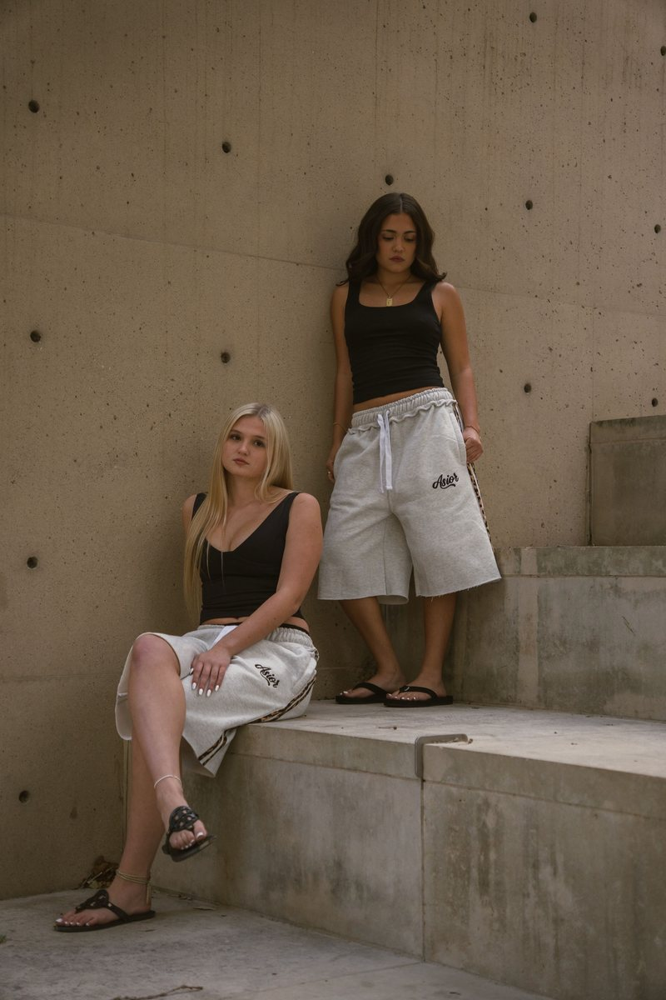
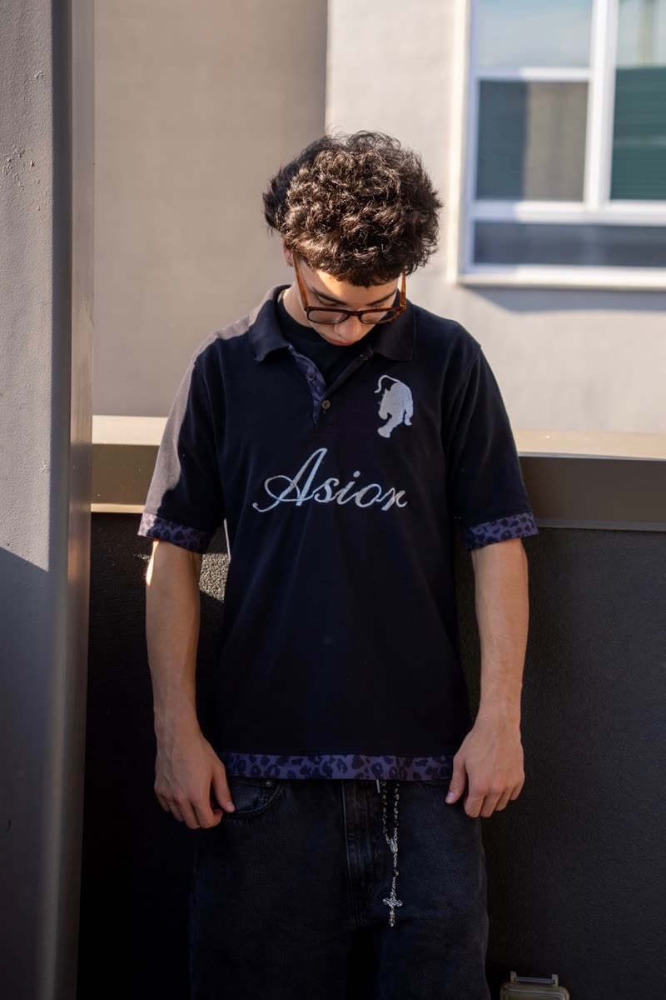
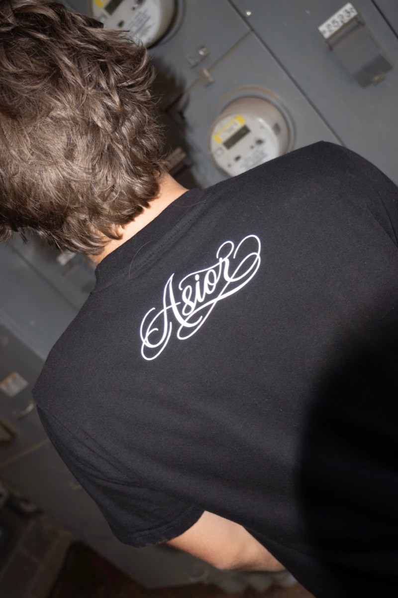

The lookbook
The collection,
on real people.
The whole collection on real people, in the places it was made for.
See the lookbook
Any 2 pieces 15% off, applied at checkout





The lookbook
The whole collection on real people, in the places it was made for.
See the lookbook